Toki Pona nanpa-linja-n decimal number system ilo pi pana nanpa


Welcome to the Toki Pona nanpa-linja-n decimal number system.
At last, nanpa-linja-n offers an elegant solution to the challenge of representing and communicating decimal numbers consistently. kama pona tawa lipu ilo pi nasin nanpa-linja-n pi nanpa linja n pi toki pona.
At last, nanpa-linja-n offers an elegant solution to the challenge of representing and communicating decimal numbers consistently. kama pona tawa lipu ilo pi nasin nanpa-linja-n pi nanpa linja n pi toki pona.
nanpa-linja-n encodes decimal numbers as proper names. In sitelen pona, these names are written inside numeric cartouches.
The content of a nanpa-linja-n cartouche is a pure encoding. Each decimal digit—and each numeric delimiter, such as a decimal point—has a designated sitelen pona glyph and a corresponding Latin-letter representation. This mapping is unique and reversible, allowing the original decimal sequence to be reconstructed exactly from either form.
nanpa-linja-n does not introduce any new Toki Pona words or add anything to the Toki Pona lexicon. It is a notation system only. Any “words” discussed below are identifier strings, or proper-name labels, derived from the encoded cartouche. When a nanpa-linja-n proper name is written in the Latin alphabet, each word begins with a capital letter.
The ten Toki Pona letters i, w, t, s, a, l, u, m, p, and j represent the decimal digits 0, 1, 2, 3, 4, 5, 6, 7, 8, and 9, respectively, within numeric cartouches.
The letters n and e are used to structure the encoding and make the proper name derived from the cartouche pronounceable. The letters o and k, used in various combinations, represent numeric punctuation and delimiters, such as the decimal point.
Every letter in the Toki Pona Latin alphabet therefore has a distinct function within nanpa-linja-n.
PDF cheat sheet
Precise decimal numbers appear everywhere: in dates, times, measurements, percentages, telephone numbers and many other forms.
nanpa-linja-n represents exact decimal numbers through proper names using a small, reusable set of digit syllables and numeric punctuation words. Once the ten digit syllables and a few separators are familiar, the same system can be used to read and write integers, decimals, fractions, dates, times and much more.
The examples below may initially look unfamiliar, but they are all constructed from the same repeating rules. You do not need to learn a separate method for each type of number.
| Usage | Example | nanpa-linja-n proper name | nanpa-linja-n sitelen cartouche | nanpa-linja-n abbreviated cartouche | #~ abbreviation |
|---|---|---|---|---|---|
| Integers | 42 |
Nenatun |
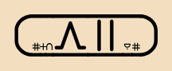 |
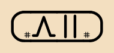 |
#~AT |
| Negatives | -3 |
Neno Sen |
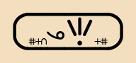 |
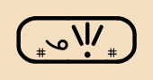 |
#~oS |
| Decimals | 0.5 |
Nenin One Lun |
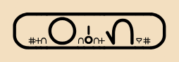 |
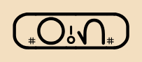 |
#~IoL |
| ISO thousands | 4,321 |
Nenan Eke Setuwan |
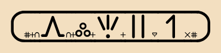 |
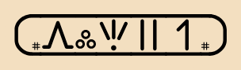 |
#~AkSTW |
| Percentages | 67% |
Nenumun Oken |
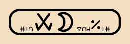 |
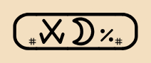 |
#~UMok |
| Scientific notation | 9.8e-3 |
Nejen One Pin Eko Nosen |
 |
 |
#~JoPekooS |
| Fractions | 1/2 |
Newan Ono Tun |
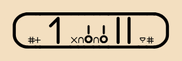 |
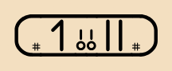 |
#~WooT |
| Integers and fractions | 8+3/4 |
Nepin Oko Sen Ono Nan |
 |
 |
#~PokoSooA |
| Large integers | 1,234,567 |
Newan Eke Tusenan Eke Lunumun |
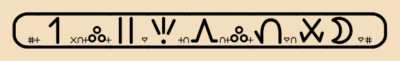 |
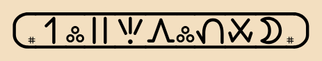 |
#~WkTSAkLUM |
| ISO Dates | 2026-07-18 |
Netunitunun Eke Nimun Eke Wapin |
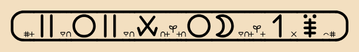 |
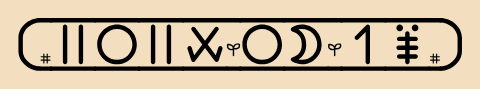 |
#~TITUkIMkWP |
| ISO Times | 06:30 |
Neninun Eke Senin |
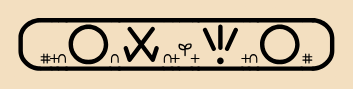 |
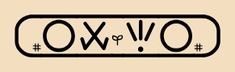 |
#~IUkSI |
| Telephone numbers | 432-555-6789 |
Nenasetun Ene Lululun Ene Numupijen |
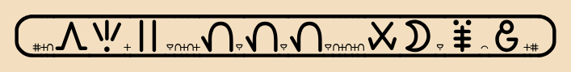 |
 |
#~ASTeeLLLeeUMPJ |
| Leading zeros | 007 |
Neninimun |
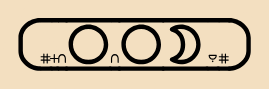 |
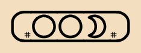 |
#~IIM |
The aim is for learners to recognise the recurring patterns and eventually read, write and understand nanpa-linja-n directly.
This table shows which syllables are allowed for each decimal digit when reading and writing a nanpa-linja-n proper name.
In strict mode, each digit has only one accepted syllable. For example, digit 1 uses we, digit 2 uses te, and digit 5 uses le.
In relaxed mode, some digits can also use extra syllables that mean the same digit. For example, digit 1 can use we or wa, digit 2 can use te or tu, and digit 5 can use le or lu.
The e, a, i, and u columns show the nanpa-linja-n glyphs for the supporting vowel used in some digit syllables.
For ni, na, and nu, the supporting consonant is represented in nanpa-linja-n by the sitelen pona glyph nena.
The large glyph column shows the main sitelen pona glyph used for that digit.
The small glyph row shows the small supporting glyph associated with each vowel column.
In relaxed mode, for example, we will accept Nemun, as well as Nemen, to represent the number 7.
Relaxed mode is preferred because it allows some digits to be represented using more natural syllables.
In strict mode, each digit has only one accepted syllable. For example, digit 1 uses we, digit 2 uses te, and digit 5 uses le.
In relaxed mode, some digits can also use extra syllables that mean the same digit. For example, digit 1 can use we or wa, digit 2 can use te or tu, and digit 5 can use le or lu.
The e, a, i, and u columns show the nanpa-linja-n glyphs for the supporting vowel used in some digit syllables.
For ni, na, and nu, the supporting consonant is represented in nanpa-linja-n by the sitelen pona glyph nena.
The large glyph column shows the main sitelen pona glyph used for that digit.
The small glyph row shows the small supporting glyph associated with each vowel column.
In relaxed mode, for example, we will accept Nemun, as well as Nemen, to represent the number 7.
Relaxed mode is preferred because it allows some digits to be represented using more natural syllables.
| relaxed | strict | |||||||||||||||
|---|---|---|---|---|---|---|---|---|---|---|---|---|---|---|---|---|
| digit | e | a | i | u | large glyph | sitelen glyphs | abbreviated | audio | digit | e | a | i | u | large glyph | sitelen glyphs | abbreviated |
| 0 | - | - | ni | - | ijo | | | 0 | - | - | ni | - | ijo | | | |
| 1 | we | wa | - | - | wan | | | 1 | we | - | - | - | wan | | | |
| 2 | te | - | - | tu | tu | | | 2 | te | - | - | - | tu | | | |
| 3 | se | - | - | - | seli | | | 3 | se | - | - | - | seli | | | |
| 4 | - | na | - | - | awen | | | 4 | - | na | - | - | awen | | | |
| 5 | le | - | - | lu | luka | | | 5 | le | - | - | - | luka | | | |
| 6 | - | - | - | nu | utala | | | 6 | - | - | - | nu | utala | | | |
| 7 | me | - | - | mu | mun | | | 7 | me | - | - | - | mun | | | |
| 8 | pe | - | pi | - | pipi | | | 8 | pe | - | - | - | pipi | | | |
| 9 | je | - | - | - | jo | | | 9 | je | - | - | - | jo | | | |
| small glyph | en | ala | ike | uta | small glyph | en | ||||||||||
| small sitelen glyph | | | | | small sitelen glyph | | ||||||||||
| numeric punctuation | nanpa-linja-n proper name letters | split words | glyph sequence | sitelen glyphs | abbreviated | audio |
|---|---|---|---|---|---|---|
| Starting nanpa-linja-n | Ne | Ne- | nanpa en | | | |
| negative | no | no | nena ona | | | |
| decimal point | none | -n One | nena o nena en | | | |
| ISO thousands | neke | -n Eke | nena en kulupu en | | | |
| percentage | noke | -n Oke-n | nena open kipisi en | | | |
| scientific notation | neko | -n Eko | nena en kala open | | | |
| numerator vs denominator | nono | -n Ono | nena o nena o | | | |
| integer vs fraction | noko | -n Oko | nena open kin open | | | |
| date | neke | -n Eke | nena en kasi en | | | |
| time | neke | -n Eke | nena en kasi en | | | |
| spacer (no value) | nene | -n Ene | nena en nena en | | (optional) | |
| Ending nanpa-linja-n | n | -n | nanpa | | |
How is 125 written as a nanpa-linja-n proper name?
Every nanpa-linja-n proper name for a number begins with Ne- and ends with -n. Each decimal digit maps to a unique Toki Pona Latin letter, which is expressed in the proper name using a designated syllable.
Using the relaxed mapping described above:
- 1 → w → wa
- 2 → t → tu
- 5 → l → lu
These syllables are concatenated between the initial Ne- and the final -n:
Ne + wa + tu + lu + n → Newatulun
Therefore, the nanpa-linja-n proper name for 125 is Newatulun.
See the number-to-proper-name page for a more interactive experience.
The decimal number renderer can render any decimal number and produce an audio pronunciation. The encoding of decimal points and other numeric punctuation, together with the strict and relaxed digit mappings, is explained with examples on this page and in detail in the
nanpa-linja-n main documentation
.
To communicate "007", say "Neninimun".
(It is very easy to encode decimal digit sequences and preserve leading and trailing zeros.)
sina wile toki e "007" la, o toki e "Neninimun".
(ni li pona mute tawa awen e nanpa ala lon open en lon pini.)
Listen and try to guess the decimal numbers.
(It is very easy to encode decimal digit sequences and preserve leading and trailing zeros.)
sina wile toki e "007" la, o toki e "Neninimun".
(ni li pona mute tawa awen e nanpa ala lon open en lon pini.)
Listen and try to guess the decimal numbers.
Tool: Multiline Latin text → sitelen pona glyphs o lukin e ilo ni: sitelen toki pona mute-linja tawa sitelen pona
Multiline Latin text → sitelen pona glyphs → PNG image file download and PDF file download
o lukin e ilo ni: sitelen toki pona mute-linja tawa sitelen pona
Tool: Represent decimal numbers as nanpa-linja-n proper names and sitelen pona cartouches ilo pi pana nanpa (poka) + ilo sitelen pi poki nimi
Convert decimal numbers to nanpa-linja-n cartouches
ilo pi pana nanpa (poka) + ilo sitelen pi poki nimi
Learn: See how numbers become nanpa-linja-n proper names, audio, and sitelen pona cartouches o lukin. o kute. o kama sona e nasin pi nanpa-linja-n
Enter a number and follow the conversion step by step. Listen to the
nanpa-linja-n proper name and see the full and preferred abbreviated
sitelen pona cartouches.
Open the nanpa-linja-n number-to-proper-name, audio, and cartouche learning page
o lukin e nasin ni: nanpa li kama nimi nanpa-linja-n. o kute e nimi
Practice: Read abbreviated sitelen pona cartouches and learn nanpa-linja-n proper names o lukin e poki nimi nanpa lili. o kama sona e nimi nanpa-linja-n
Read abbreviated nanpa-linja-n sitelen pona cartouches, gradually reveal
their glyphs as you type, and practise writing the corresponding proper names.
Open the nanpa-linja-n abbreviated cartouche reading practice
o lukin e poki nimi nanpa lili. o sitelen e nimi nanpa
Practice: Listen to audio and learn to understand and pronounce nanpa-linja-n proper names o kute. o toki. o kama sona e nanpa-linja-n
Listen to nanpa-linja-n proper names, identify the decimal numbers,
and practise their pronunciation.
Open the nanpa-linja-n listening and pronunciation practice
o kute e nimi nanpa. o toki e nimi nanpa
Tool: English proper names tokiponizer o lukin e ilo pi ante nimi jan pi toki Inli tawa toki pona
English proper names tokiponizer
ilo ni li ante e nimi jan pi toki Inli tawa toki pona
Tool: Control how proper names are rendered on all pages of this site o lukin o awen e nasin pi sitelen nimi pona lon lipu ale
Control how proper names are rendered on all pages of this site
o awen e nasin pi sitelen nimi pona lon lipu ale
Tool: Video caption overlay editor → OTIO zip file download o lukin e ilo pi sitelen toki pona lon sitelen tawa
Toki Pona video caption overlay editor → OTIO zip file download
ilo pi sitelen toki pona lon sitelen tawa
Tool: Layout editor → PNG image file download o lukin e lo pi ante lon ijo
Layout editor → PNG image file download
o lukin e lo pi ante lon ijo
Tool: nanpa-linja-n cartouche calculator ilo nanpa pi poki nimi pi nanpa-linja-n
nanpa-linja-n cartouche calculator
ilo nanpa pi poki nimi pi nanpa-linja-n
Game: Memory cards game o lukin e musi pi lipu sona
memory cards game
musi pi lipu sona
Game: Cartouche spelling game o lukin e musi pi sitelen pona
cartouche spelling game
sitelen pona
Game: 15 puzzle game o lukin e musi pi leko tawa nanpa Newelen pi toki pona
15 puzzle game
musi pi leko tawa nanpa Newelen pi toki pona
Game: 2048 game o lukin e musi nanpa Neteninapen
2048 game
musi nanpa Neteninapen
Game: nanpa-linja-n guess the number game o lukin e musi pi alasa nanpa nanpa-linja-n pi toki pona
guess the number game
musi pi alasa nanpa nanpa-linja-n pi toki pona
Game: nanpa-linja-n maze game o lukin e musi pi nasin pi nanpa-linja-n lon toki pona
maze game
musi pi nasin pi nanpa-linja-n lon toki pona
Info: Toki Pona nanpa-linja-n main documentation lipu sona suli pi nanpa-linja-n
Other Sites: Useful Toki Pona sites
https://tokipona.net/
https://sitelenpona.net/
https://raacz.neocities.org/toki-pona/beginner-material/
https://sitelenpona.net/
https://raacz.neocities.org/toki-pona/beginner-material/
The available base fonts and their nanpa-linja-n companion fonts are loaded from the preloaded font-pairs manifest when this panel is first opened.
Font details will load when this panel is opened.
The nanpa-linja-n companion fonts are specialised variants for displaying nanpa-linja-n numeric cartouches, not general-purpose sitelen pona fonts. Only inside these cartouches, some glyphs are resized: nanpa, nena, en, ala, ike, uta, and open to one-quarter size; kasi to one-third; kala to one-half; and ona, o, kulupu, kipisi, and kin to two-thirds of the original font size. Outside numeric cartouches, the base font remains unchanged.


Disclaimer: This tool is provided “as is”, with no claim, guarantee, or warranty that the output is correct,
complete, or suitable for any purpose. You are responsible for verifying results.
sona: ilo ni li lon nasin “as is”. mi pana ala e wawa pi pona.
sina o lukin e ni: sitelen li pona anu seme.